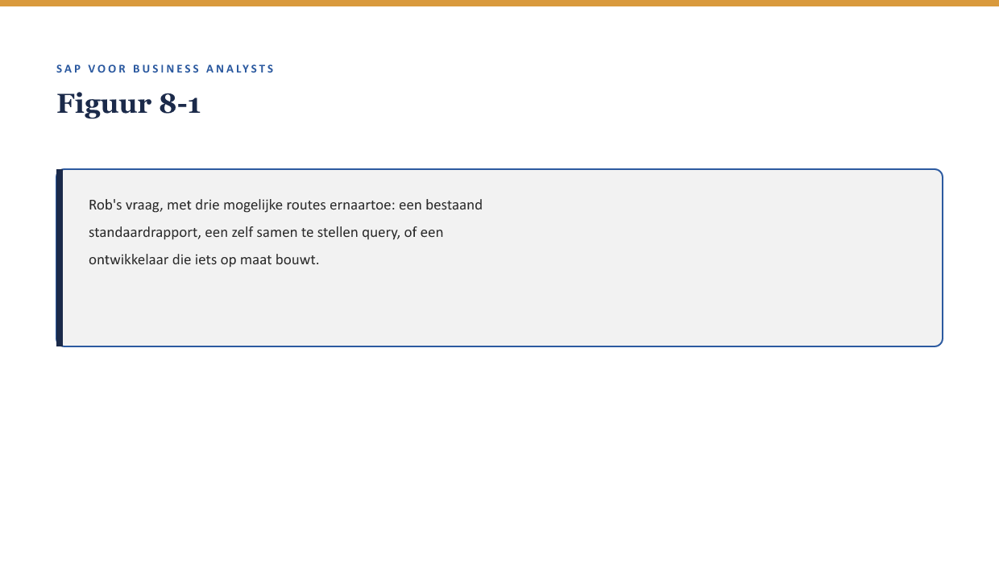

Deel 8 — Rapportage & analytics voor BA’s
Reader · Niveau 1 Fundamenten · Cursus SAP voor Business Analysts · Ductus
Leerdoelen
Na dit deel kun je:
- het onderscheid benoemen tussen standaardrapportage, zelf samengestelde queries en embedded analytics;
- inschatten welk type rapportagevraag een BA (met beperkte hulp) zelf kan beantwoorden, en welk type een ontwikkelaar vergt;
- uitleggen waarom de Universal Journal (↗ deel 15) rapportage in S/4HANA anders laat aanvoelen dan in ECC, op het niveau dat een BA nodig heeft;
- een rapportagevraag zo formuleren dat duidelijk is welke brongegevens en welk detailniveau nodig zijn;
- een veelvoorkomende valkuil herkennen: een rapport dat cijfers toont zonder dat duidelijk is wát ze precies meten.
Studielast: één dagdeel klassikaal, circa drie uur zelfstudie.
1. “Hoeveel polissen hebben deze uitzondering?”
Rob Hendriks vraagt Sanne tijdens een stuurgroep: “Kun je me snel laten zien hoeveel van onze polissen de historische kortingsregel gebruiken?” Sanne weet inmiddels genoeg om te weten dát dit een datamodel-vraag is (↗ deel 3) — maar zij weet nog niet of zij deze vraag zelf kan beantwoorden, of dat zij daarvoor een ontwikkelaar nodig heeft.

Dit deel behandelt precies dat onderscheid: wanneer kun je als BA zelf (of met lichte hulp van een consultant) een vraag beantwoorden, en wanneer heb je een ontwikkelaar nodig?
2. Waarom dit voor de BA telt
Waarom dit voor de BA telt. Dit onderwerp ontbrak in de eerdere versie van deze leerreeks, en dat is een omissie: rapportagevragen horen tot het dagelijkse werk van een BA, en de meeste ervan zijn met de juiste basiskennis zelfstandig te beantwoorden. Een BA die elke rapportagevraag doorzet naar IT, verspilt tijd en drukt onnodig op de ontwikkelcapaciteit; een BA die denkt dat hij alles zelf kan uitvragen, loopt het risico rapporten te bouwen op basis van een verkeerd begrepen datamodel.
3. Drie manieren om iets uit het systeem te halen
3.1 Standaardrapportage
SAP levert een reeks kant-en-klare rapporten voor veelvoorkomende vragen — bijvoorbeeld een overzicht van actieve polissen per productvariant. Voor een BA is dit de makkelijkste route: geen opbouw nodig, wel kennis van welk standaardrapport bestaat en hoe het te vinden (↗ deel 2, navigatie).
3.2 Zelf samengestelde queries
Voor vragen die net niet in een standaardrapport passen, biedt SAP query-tools waarmee een BA (vaak met korte instructie van een consultant) zelf een eigen overzicht kan samenstellen uit beschikbare gegevens — zonder te programmeren, wel met kennis van welke tabellen en velden relevant zijn (↗ deel 3).
3.3 Embedded analytics
Modernere, vaak Fiori-gebaseerde analysetools die direct op de actuele data werken, met visualisaties en filters, bedoeld om zonder aparte rapportagestap inzicht te bieden. Dit is het gebied waar het verschil tussen ECC en S/4HANA (↗ deel 1 §4.1) het meest voelbaar wordt: S/4HANA’s onderliggende datamodel maakt dit soort directe analyse doorgaans sneller en flexibeler.

Kernzin — Hoe verder je van standaardrapportage af beweegt, hoe meer flexibiliteit je krijgt en hoe meer kennis van het onderliggende datamodel je nodig hebt. Er is geen gratis flexibiliteit.
4. Wanneer heb je een ontwikkelaar nodig?
Een vraag vergt waarschijnlijk een ontwikkelaar (maatwerkrapport, zie ↗ deel 6) wanneer:
- de benodigde gegevens over meerdere, niet voor de hand liggende tabellen verspreid liggen, met een complexe onderlinge relatie;
- de vraag herhaald, geautomatiseerd of gepland moet worden uitgevoerd, in plaats van eenmalig;
- de uitkomst een specifieke opmaak of distributie vergt (bijvoorbeeld automatisch gemaild naar een vaste groep).
Rob’s vraag uit §1 is, met wat Sanne inmiddels weet, waarschijnlijk een zelf samengestelde query: één telling op basis van een herkenbaar veld (de uitzonderingsregel-indicator, ↗ deel 3 domeinen), eenmalig opgevraagd. Geen ontwikkelaar nodig — wel iemand die haar even wegwijst in de querytool.
5. De valkuil: cijfers zonder duidelijke betekenis
Een terugkerend probleem, ook buiten SAP: een rapport toont een getal zonder dat duidelijk is wát precies is geteld. “312 polissen met deze uitzondering” kan betekenen: 312 polissen waar de regel ooit is toegepast, of 312 polissen waar de regel nu actief is, of 312 polissen die in aanmerking komen maar de regel niet per se gebruiken — drie heel verschillende getallen die toevallig hetzelfde label kunnen dragen.
Kernzin — Een getal zonder een precieze definitie van wat het meet, is geen informatie maar een gok met een decimaal. Vraag bij elk rapport: wat telt dit precies, en wat telt het expliciet niet?
Dit is dezelfde disciplinelijn als de testrapport-les uit de zustercursus: een cijfer dat klopt, kan alsnog misleidend zijn als niemand vastlegt wat het precies representeert.
6. Een goede rapportagevraag formuleren
Met de vaardigheid uit deel 3 §5.1 en deel 6 §6 uitgebreid naar rapportage:
- Noem het gewenste getal of overzicht concreet (“hoeveel polissen” in plaats van “geef me inzicht”).
- Specificeer het detailniveau (per polis, per werkgever, per productvariant).
- Benoem het meetmoment (nu, op een specifieke datum, over een periode).
- Vraag expliciet wat het getal insluit en uitsluit.
7. Kruisverwijzingen
- ↗ Deel 15, niveau 2 (De financiële schaduw): de Universal Journal als voorbeeld van hoe S/4HANA’s datamodel rapportage direct raakt.
- ↗ Deel 3: sleutels en domeinen als basis om te weten wat een rapport telt.
- ↗ Testen en Kwaliteitsborging, hoofddossier: het WGP 2.0-testrapport als voorbeeld van cijfers die klopten en toch misleidend waren.
Kernbegrippen
standaardrapportage · query · embedded analytics · Universal Journal (vooruitblik) · meetmoment · detailniveau
Samenvatting in vijf zinnen
- Er zijn drie routes van vraag naar antwoord: standaardrapportage, zelf samengestelde queries, embedded analytics — met toenemende flexibiliteit en benodigde kennis.
- Een BA hoeft niet te programmeren om zelf rapportagevragen te beantwoorden, mits de vraag binnen standaardrapportage of een eenvoudige query past.
- Een ontwikkelaar is pas nodig bij complexe onderlinge tabelrelaties, herhaalde/geautomatiseerde uitvoering, of specifieke opmaak-/distributie-eisen.
- Een getal zonder precieze definitie van wat het meet, is geen bruikbare informatie.
- Een goede rapportagevraag noemt het gewenste getal, het detailniveau, het meetmoment, en wat expliciet wel/niet wordt meegeteld.